Presentations
Programme Titles & Abstracts Workshop Booklet (PDF)Slides are published as provided by the speakers, and copyright remains with the authors. Slides are not available for every session. Each presentation opens as a PDF in a new tab.
Monday 7 September
A Strongly Convergent Inertial Reflected-Forward-Backward Algorithm for Monotone Inclusion Problems with Applications
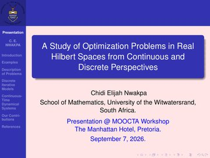
A Study of Optimization Problems in Real Hilbert Spaces from Continuous and Discrete Perspectives
A Riemannian Gradient Method with Inertial Term, Adaptive Step-Size for Optimization on Manifolds and its Applications
Some Recent Advances by Iteration for Non-smooth Convex Minimization Problems
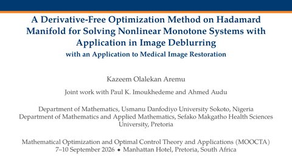
A Derivative-Free Optimization Method on Hadamard Manifold for Solving Nonlinear Monotone Systems with Application in Image Deblurring
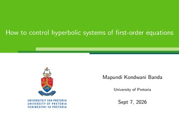
How to Control Hyperbolic Systems of First-order Equations
Animation shown on slide 15
Pressure in a network of five pipes joined at two T-junctions (the set-up on slide 14). Colour-coded pulses, red and yellow in the left vertical pipe and dark blue in the right one, travel into the horizontal pipe, split at the junctions and spread through the network. The animation has no sound. It is linked from slide 15 of the PDF, but most browsers cannot play it from there.
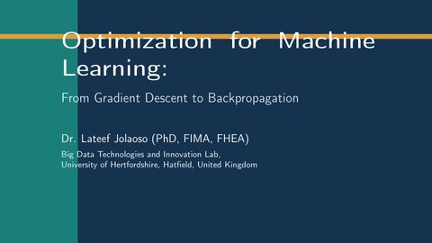
Optimization for Machine Learning: From Gradient Descent to Backpropagation
Tuesday 8 September
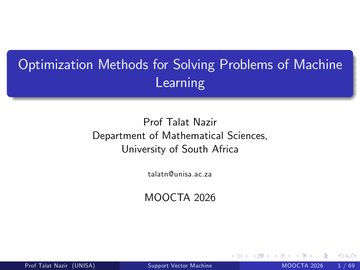
Optimization Methods for Solving Problems of Machine Learning
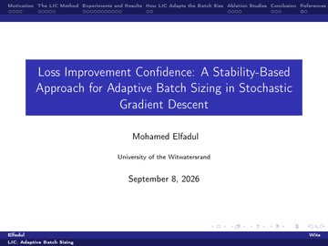
A Stability-Based Approach for Adaptive Batch Sizing in Stochastic Gradient Descent
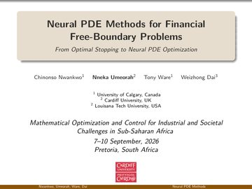
Neural PDE Methods for Financial Free-Boundary Problems
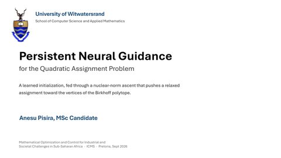
Persistent Learning-Optimization Integration: A HyGQAP Framework for the Quadratic Assignment Problem with Applications to Warehouse Logistics
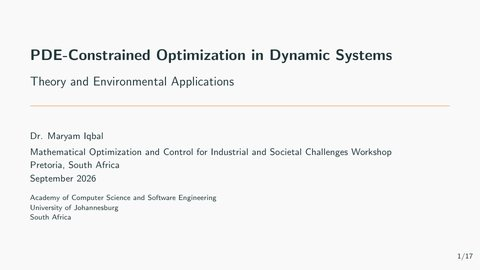
PDE-Constrained Optimization in Dynamic Systems: Theory and Environmental Applications
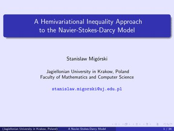
A Hemivariational Inequality Approach to the Navier-Stokes-Darcy Model
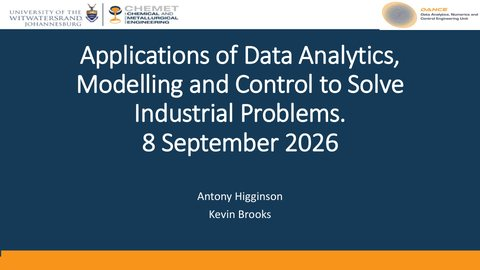
Applications of Data Analytics, Modelling and Control to Solve Industrial Problems
Wednesday 9 September
Optimising Charging Infrastructure for Electric Freight: A Combinatorial Optimisation Approach with Application to Namibia
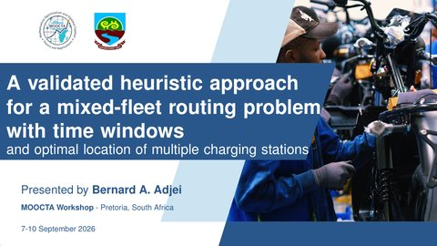
A Validated Heuristic Approach for a Mixed-Fleet Routing Problem with Time Window and Optimal Location of Multiple Charging Stations
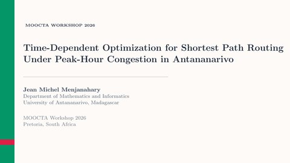
Time-Dependent Optimization for Shortest Path Routing Under Peak-Hour Congestion in Antananarivo
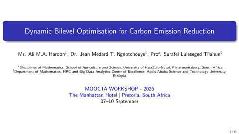
Dynamic Bilevel Optimization for Carbon Emission Reduction
Thursday 10 September
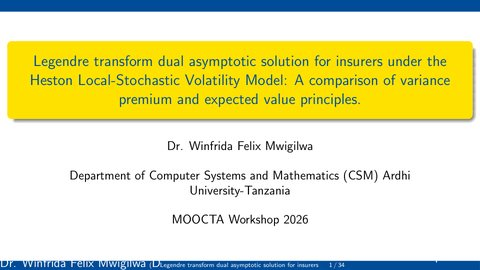
Legendre Transform Dual Asymptotic Solution for Insurers Under the Heston Local-Stochastic Volatility Model: A Comparison of Variance Premium and Expected Value Principle
A Double Obstacle Formulation for Optimal Portfolio Selection with Transaction Costs
A Single-Projection Proximal Algorithm for Stochastic Mixed Variational Inequalities with Applications to Breast Cancer Screening
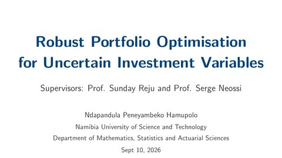
Robust Portfolio Optimisation for Uncertain Investment Variables
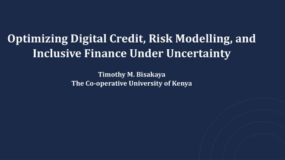